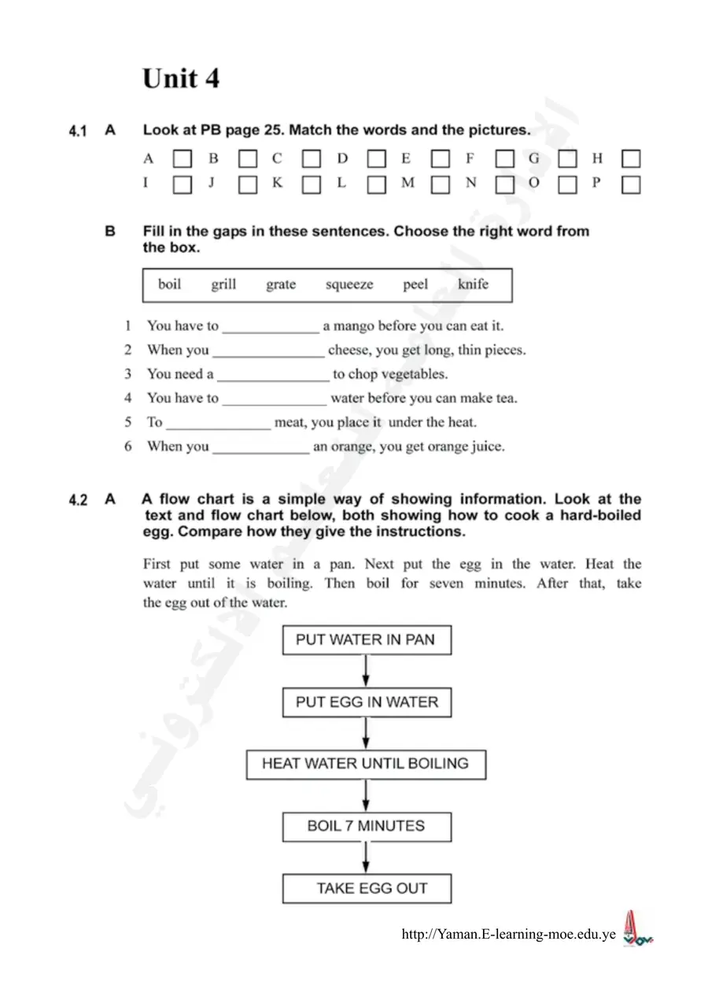

4.2 A A flow chart is a simple way of showing information. Look at the text and flow chart below, both showing how to cook a hard-boiled egg. Compare how they give the instructions. First put some water in a pan. Next put the egg in the water. Heat the water until it is boiling. Then boil for seven minutes. After that, take the egg out of the water. Flow chart: [PUT WATER IN PAN] → [PUT EGG IN WATER] → [HEAT WATER UNTIL BOILING] → [BOIL 7 MINUTES] → [TAKE EGG OUT]
B Complete the flow chart using the information in the text. First choose which programme you want to record. Next put a cassette in the video. Then choose the correct TV channel. After that, check the time the programme begins. Then set the timer on the video. Finally, push the record button. 6 empty boxes linked vertically by downward arrows (↓). C The flow chart below tells you how to plant a small tree. Use the information to write a paragraph in your copybooks. Don't forget to use sequence words like first, next, then, after that and finally. You can use some of them more than once. Flow chart: [DIG HOLE] → [MIX FERTILISER WITH SOIL FROM HOLE] → [PUT WATER IN HOLE] → [PUT TREE IN] → [PUT SOIL BACK] → [PUSH SOIL DOWN]
[
{
"num": 1,
"prompt": "1 First choose which programme you want to record → Box 1: ______",
"answers": [
"CHOOSE PROGRAMME YOU WANT TO RECORD"
]
},
{
"num": 2,
"prompt": "2 Next put a cassette in the video → Box 2: ______",
"answers": [
"PUT CASSETTE IN VIDEO"
]
},
{
"num": 3,
"prompt": "3 Then choose the correct TV channel → Box 3: ______",
"answers": [
"CHOOSE CORRECT TV CHANNEL"
]
},
{
"num": 4,
"prompt": "4 After that, check the time the programme begins → Box 4: ______",
"answers": [
"CHECK TIME PROGRAMME BEGINS"
]
},
{
"num": 5,
"prompt": "5 Then set the timer on the video → Box 5: ______",
"answers": [
"SET TIMER ON VIDEO"
]
},
{
"num": 6,
"prompt": "6 Finally, push the record button → Box 6: ______",
"answers": [
"PUSH RECORD BUTTON"
]
}
][
{
"label_ar": "1) الخطوتان الأولى والثانية (First ... Next ...)",
"placeholder": "First, dig a hole. Next, mix some fertiliser with the soil from the hole."
},
{
"label_ar": "2) الخطوتان الثالثة والرابعة (Then ... After that ...)",
"placeholder": "Then put some water in the hole. After that, put the tree in."
},
{
"label_ar": "3) الخطوتان الخامسة والسادسة (Then ... Finally ...)",
"placeholder": "Then put the soil back and finally, push the soil down."
},
{
"label_ar": "4) الفقرة المتصلة كاملة في الدفتر",
"placeholder": "First, dig a hole. Next, mix some fertiliser with the soil from the hole. Then, put some water in the hole. After that, put the tree in the hole. Next, put the soil back. Finally, push the soil down."
}
]{
"wb_ocr_vs_image": "قُورنت صفحتا WB ص 41–42 مع tesseract.js eng: سقطت أسهم ومربعات المخطط الثاني في OCR ('F Wi virvi =ih WN'), واستُعيض عن 'Cc' بتأكيد الحرف 'C'، كما تحقّقت الصورة wb-043.png من وجود مسافة دقيقة بين 'that' المائلة و'and' في تعليمات 4.2 C."
}